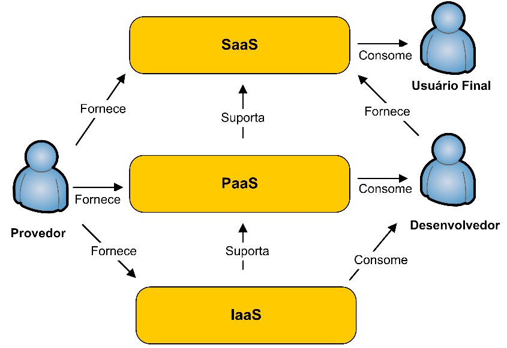

computação
em nuvem
=
internet
tecnologia
conceito
usa tecnologias
já existentes
com uma nova
arquitetura
cliente magro
foco no servidor
mínimo
processamento
local
vantagens
Acesso de
qualquer dispositivo
conectado
independe do
so utilizado
compartilhamento
backup de arquivos
grandes recursos
em dispositivos
pessoais
desvantagens
Menor proteção
à privacidade
mais sucetíveis a
falhas de segurança
travamento
dos dados e
controle de
terceiros
indisponibilidade e
congelamento
de conta
velocidade limitada
inviabiliza utilização
evolução
1960
John McCarthy
1990
banda larga
diminuição dos
altos custos com ti
hoje
segurança
preocupante
velocidade
dos serviços
fator limitador
modelos de
implantação
Nuvem Privada
Nuvem Pública
Nuvem Comunidade
Nuvem Híbrida
categorias
IaaS
PaaS
SaaS
software
acesso a um
software
hospedado
remotamente
dispensa
instalação,
atualização
e suporte
plataforma
oferece
infraestrutura
+
plataforma para
desenvolvedores
permite
desenvolver,
compilar,
depurar e testar
infraestrutura
servidores,
armazenamento
de dados
e gerenciamento
de tráfego de rede
controle
total do so
hardware
virtualizado

"IaaS, PaaS e SaaS
são os catalisadores de
crescimento do mercado
a longo prazo."
- softwarestrategiesblog.com
arquitetura
Camada de
Infraestrutura
Camada de
Middleware
Processamento
Camada de
Middleware
Desenvolvimento
Camada de Usuário
de Serviços
virtualização
Secção
do Hardware
em porções
podem ser
considerados
servidores
separados
Recursos
facilmente
ampliados
ou reduzidos
serviços
alta confiabilidade,
escalabilidade,
segurança
e baixo custo
Amazon ec2
demonstração
hospedagem web
para projetos
compartilhados
controle
de versão
git
git: Criado por
Linus Torvalds
so de código
aberto criado
pelo Google
uso focado
no navegador
não permite
instalação
de software
client-side
segurança
Perda ou
Vazamento
de Dados
Fragilidade de
Tecnologias
Compartilhadas
Equipe Interna
Maliciosa
Roubo de Contas,
Dados e Serviços
Interfaces
Inseguras
Compra de
Recursos na Nuvem
Tecnologia
Ainda Desconhecida
Caso de Uso
CMS
Gerencia
todo o conteúdo
de um website
Editar
Inserir
excluir
Dispensa
conhecimento
em programação
Criação do CMS
Vignette
1995
Início dos blogs
e redes sociais
Dispensa
instalação
de software
Utilização
no meio
corporativo
Customização
através de
templates
banckend
x
frontend
Proprietário
x
Código aberto
mais usados
Protótipo
Tecnologias
Banco de Dados
Linguagem
Server-Side
Linguagem
Client-Side
...
obrigado
Use a barra de espaços ou setas para navegar